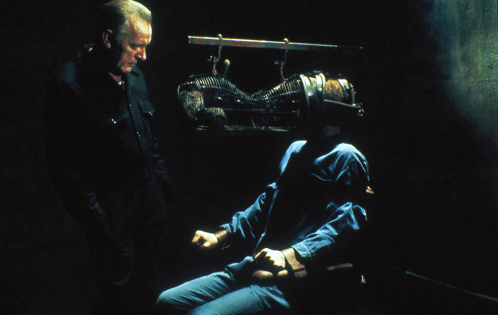

THE RISING
ANTI-UTOPIA
In a dystopia, the canonical example is that of 1984. There is total surveillance. Information is gathered about everyone, and this information is used to decide who you are or how to behave. We seem detached from managing our personae in the public world, and managing how we define ourselves. The rhetoric of “Big Brother technologies” is easily—and frequently—ridiculed as “sinister conspiracies”, but the paradoxical result is that genuinely worrisome developments can seem “not so bad” simply for lacking the overt horrors of Orwell’s dystopia. Of course the perceived meaning may depend on the onlooker’s expectations, but now the cycle seems to expand—from utopias and dystopias, to the rise of anti-utopian dreams.
[A] Goldberg, Adele & Kay, Alan. (1977). Personal Dynamic Media.
[B] Agre, Philip. (1994). Surveillance and Capture: Two Models of Privacy.

Stills from the film 1984 (1984), based on the
book by George Orwell, by Michael Radford
The Panopticon In the panopticon, conceived by Jeremy Bentham, the prison’s guards sit in a central tower, ringed by a building containing cells. The cells are constructed so that light shines through them, toward the tower.
This “backlights” the inmates in their individual cells, making each prisoner’s every move visible to a guard in the tower. The tower is constructed so that prisoners can never tell if they are being watched.
As Foucault writes, “the major effect of the Panopticon” is “to induce in the inmate a state of conscious and permanent visibility that assures the automatic functioning of power. (...) The inmates know that they may be monitored at any time, so they will act at all times as though they are being monitored, becoming their own surveillance.
[B]
Seeing Everything What will remain will be the continual capture of private data by mega-corporations, tracking employees, customers, and passersby though every glimpse. Already, corporations may monitor all casual conversation by users that passes through their software, and even do so under the shroud of legality. (...) In space, perhaps, no one can hear you scream. But in cyberspace, someone—perhaps the richest man on the planet—can indeed hear you, whether you scream, cry, or whisper, even in a “private” conversation.
[B]